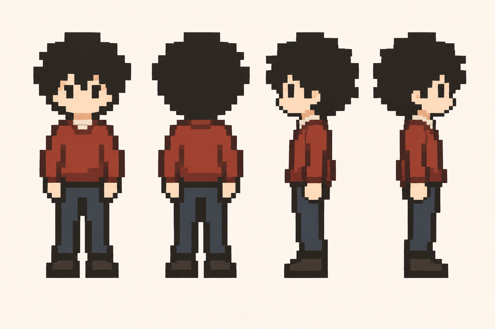

独立程序绘图实验 · 同尺寸比较 · 未替换游戏人物
同一个南京主角，两份程序绘制样品
两版均为每帧48×64、下／上／左／右四向站姿、透明PNG，脚底对齐。Codex版自行编写轮廓与色块，没有复制或修改TraeX的绘图几何，也未抽取原图像素。棋盘格仅用于显示透明区域。
Codex 绘制

向下向上向左向右
图集1,298 B，18种RGBA值（含透明）。头部收窄、躯干更修长，使用不规则发束与分块衣褶；侧向几何主要镜像。
TraeX 绘制

向下向上向左向右
图集1,460 B，20种RGBA值（含透明）。保持相同画布与展示宽度，不按文件大小评价美术质量。
南京原有造型参考

原作造型参考；分辨率和绘制方式不同，不能拿整幅参考文件与小图集计算压缩率。
我对自己的判断：基本服装与四向辨识度已保留，但侧脸、鞋型与发束仍有差别，尚未达到南京成品的一致性要求。两版都只有站姿，不代表行走、情绪或坐姿已经完成。
Codex绘图源码 · 尺寸与哈希记录 · TraeX原对照页 · 南京游戏